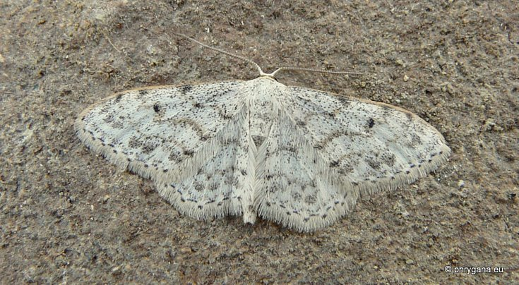

| PHRYGANA | Fauna | Flora | nouveautés | liste des espèces |
contact -
info - commentaires phrygana1 (at) gmail.com |
| Particularités crétoises | Galles et mines | ressources naturelles |
| Idaea camparia (Herrich- Schaffer 1852) |
| 261 | Fauna | LEPIDOPTERA | GEOMETRIDAE | Sterrhinae | Idaea Treischke 1825 |
 Idaea camparia Melambes (Agios Giorgos) 13 avril 2011 |
| Envergure: mâle 15 - 19 mm; femelle 18 - 21mm. Couleur de fond blanc sale. Lignes transversales dilatées sur la costa; ligne postmédiane dentée |
| Espèce trivoltine: période de vol: avril mai juin juillet août septembre |
| Larve polyphage: plantes herbacées fanées |
| Altitudes: 0 - 800 m |
| Statut en Crète: indigène -- native |
| Biotopes en Crète: phrygana, olivaies, garrigue, collines sèches |
| Distribution: région Méditerranéenne orientale, Balkans orientaux, Asie mineure, Iran, Proche-Orient |
| Note: l'adulte vient à la lumière. Espèce thermophile |
| 18 janvier 2012 |
| © paul fontaine -- © Phrygana.eu 2007 -- 2013 |